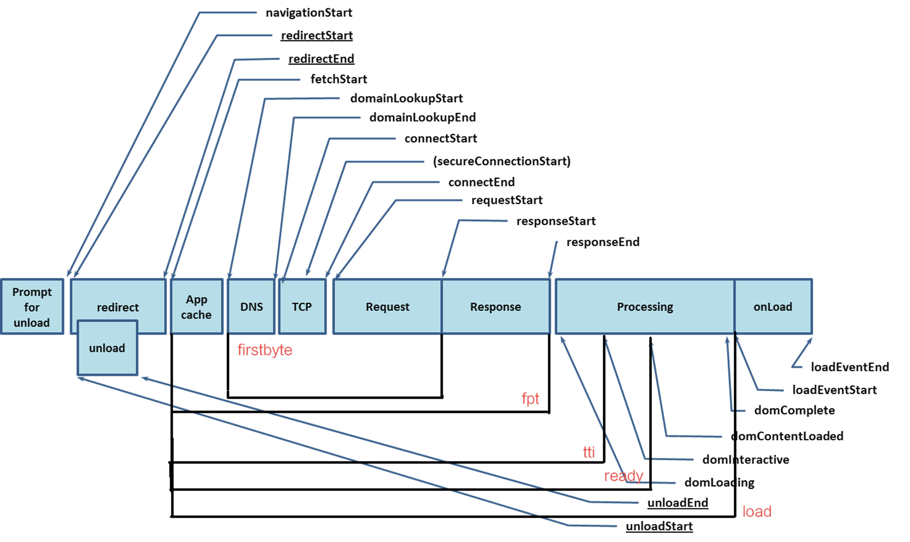

页面生命周期
页面生命周期主要触发的事件：
- DOMContentLoaded：浏览器已完全加载 HTML，并构建了 DOM 树，但像
<img>和样式表之类的外部资源可能尚未加载完成。 - load：浏览器不仅加载完成了 HTML，还加载完成了所有外部资源：图片，样式等。
- beforeunload：用户正在离开：我们可以检查用户是否保存了更改，并询问他是否真的要离开。
- unload：用户几乎已经离开了，但是我们仍然可以启动一些操作，例如发送统计数据。
页面加载时的发出的浏览器事件主要如下，可以在 Navigation Timing API获取对应的时间戳。

Navigation Timing API
Navigation Timing API 提供了可用于衡量一个网站性能的数据。与用于相同目的的其他基于JavaScript的机制不同，该API可以提供可以更有用和更准确的端到端延迟数据。
可以通过window.performance 获取Performance接口的对象，包括 timing, navigation。

timing是PerformanceTiming接口的一个对象，包括页面加载过程中的事件时间戳，根据先后顺序，列表如下：
timing: {
// 同一个浏览器上一个页面卸载(unload)结束时的时间戳。如果没有上一个页面，这个值会和fetchStart相同。
navigationStart: 1543806782096,
// 上一个页面unload事件抛出时的时间戳。如果没有上一个页面，这个值会返回0。
unloadEventStart: 1543806782523,
// 和 unloadEventStart 相对应，unload事件处理完成时的时间戳。如果没有上一个页面,这个值会返回0。
unloadEventEnd: 1543806782523,
// 第一个HTTP重定向开始时的时间戳。如果没有重定向，或者重定向中的一个不同源，这个值会返回0。
redirectStart: 0,
// 最后一个HTTP重定向完成时（也就是说是HTTP响应的最后一个比特直接被收到的时间）的时间戳。
// 如果没有重定向，或者重定向中的一个不同源，这个值会返回0.
redirectEnd: 0,
// 浏览器准备好使用HTTP请求来获取(fetch)文档的时间戳。这个时间点会在检查任何应用缓存之前。
fetchStart: 1543806782096,
// DNS 域名查询开始的UNIX时间戳。
//如果使用了持续连接(persistent connection)，或者这个信息存储到了缓存或者本地资源上，这个值将和fetchStart一致。
domainLookupStart: 1543806782096,
// DNS 域名查询完成的时间.
//如果使用了本地缓存（即无 DNS 查询）或持久连接，则与 fetchStart 值相等
domainLookupEnd: 1543806782096,
// HTTP（TCP） 域名查询结束的时间戳。
//如果使用了持续连接(persistent connection)，或者这个信息存储到了缓存或者本地资源上，这个值将和 fetchStart一致。
connectStart: 1543806782099,
// HTTP（TCP） 返回浏览器与服务器之间的连接建立时的时间戳。
// 如果建立的是持久连接，则返回值等同于fetchStart属性的值。连接建立指的是所有握手和认证过程全部结束。
connectEnd: 1543806782227,
// HTTPS 返回浏览器与服务器开始安全链接的握手时的时间戳。如果当前网页不要求安全连接，则返回0。
secureConnectionStart: 1543806782162,
// 返回浏览器向服务器发出HTTP请求时（或开始读取本地缓存时）的时间戳。
requestStart: 1543806782241,
// 返回浏览器从服务器收到（或从本地缓存读取）第一个字节时的时间戳。
//如果传输层在开始请求之后失败并且连接被重开，该属性将会被数制成新的请求的相对应的发起时间。
responseStart: 1543806782516,
// 返回浏览器从服务器收到（或从本地缓存读取，或从本地资源读取）最后一个字节时
//（如果在此之前HTTP连接已经关闭，则返回关闭时）的时间戳。
responseEnd: 1543806782537,
// 当前网页DOM结构开始解析时（即Document.readyState属性变为“loading”、相应的 readystatechange事件触发时）的时间戳。
domLoading: 1543806782573,
// 当前网页DOM结构结束解析、开始加载内嵌资源时（即Document.readyState属性变为“interactive”、相应的readystatechange事件触发时）的时间戳。
domInteractive: 1543806783203,
// 当解析器发送DOMContentLoaded 事件，即所有需要被执行的脚本已经被解析时的时间戳。
domContentLoadedEventStart: 1543806783203,
// 当所有需要立即执行的脚本已经被执行（不论执行顺序）时的时间戳。
domContentLoadedEventEnd: 1543806783216,
// 当前文档解析完成，即Document.readyState 变为 'complete'且相对应的readystatechange 被触发时的时间戳
domComplete: 1543806783796,
// load事件被发送时的时间戳。如果这个事件还未被发送，它的值将会是0。
loadEventStart: 1543806783796,
// 当load事件结束，即加载事件完成时的时间戳。如果这个事件还未被发送，或者尚未完成，它的值将会是0.
loadEventEnd: 1543806783802
}
navigation是 PerformanceNavigation的对象，存储两个属性：
type // 如何导航到这个界面的，0-点击链接、书签、表单提交、脚本操作、直接输入地址；1-点击刷新、location.reload；2-历史记录、前进后退；255-其他方式
redirectCount // 在到达这个页面之前重定向了多少次
document.readyState
Document.readyState 属性描述了document 的加载状态。
readyState的值有：
- loading：document 仍在加载。
- interactive：文档已被解析，"正在加载"状态结束，但是诸如图像，样式表和框架之类的子资源仍在加载。
- complete：文档和所有子资源已完成加载。表示 load 状态的事件即将被触发。
当该属性值发生变化时，会在 document 对象上触发 readystatechange 事件。
document.addEventListener('readystatechange', (event) => {
log.textContent = log.textContent + `readystate: ${document.readyState}\n`;
});
domLoading
浏览器开始解析dom树的时间点。对应readyState为loading。
domInteractive
表示浏览器完成对所有 HTML 的解析并且 DOM 构建完成的时间点。对应readyState为interactive。
document DOMContentLoaded事件
表示 DOM 准备就绪并且没有样式表阻止 JavaScript 执行的时间点，这意味着现在我们可以构建渲染树了。
- 由于同步JS会阻塞Dom的解析，因此在有同步JS的情况下，domInteractive和domContentLoaded的区别不大。
- 如果JS添加了defer属性，那么domInteractive和domContentLoaded的时间差取决于JS的下载和执行时间。defer JS表示告诉浏览器，这段JS在domInteractive后执行。见http://www.w3.org/TR/html5/syntax.html#the-end 。一旦执行完defer JS，就会触发domContentLoaded.
- 如果JS属性为async，那么domContentLoaded和domInteractive又几乎没什么区别了，因为js的解析不会阻塞dom，也不阻塞domContentLoad事件。
document.addEventListener('DOMContentLoaded',function(){
console.log('3 seconds passed');
});
window load事件
当页面和所有资源都加载完成时，readyState值变为complete，并触发window 上的 load 事件。可以通过window.onload获取此事件。
window.addEventListener('load', (event) => {
console.log('page is fully loaded');
});
window.onload = (event) => {
console.log('page is fully loaded');
};
window beforeunload事件
当浏览器窗口关闭或者刷新时，会触发beforeunload事件。当前页面不会直接关闭，可以点击确定按钮关闭或刷新，也可以取消关闭或刷新。可以通过window.onbeforeunload属性获取此事件。
事件使网页能够触发一个确认对话框，询问用户是否真的要离开该页面。如果用户确认，浏览器将导航到新页面，否则导航将会取消。
根据规范，要显示确认对话框，事件处理程序需要在事件上调用preventDefault()。
window.addEventListener('beforeunload', (event) => {
// Cancel the event as stated by the standard.
event.preventDefault();
// Chrome requires returnValue to be set.
event.returnValue = '';
});
// 也可以通过onbeforeunload获取事件
window.onbeforeunload = function (e) {
e = e || window.event;
// 兼容IE8和Firefox 4之前的版本
if (e) {
e.returnValue = '关闭提示';
}
// Chrome, Safari, Firefox 4+, Opera 12+ , IE 9+
return '关闭提示';
};;
注意，并非所有浏览器都支持此方法，而有些浏览器需要事件处理程序实现两个遗留方法中的一个作为代替：
- 将字符串分配给事件的
returnValue属性- 从事件处理程序返回一个字符串。
window unload事件
当文档或一个子资源正在被卸载时, 触发 unload事件。可以通过window.onunload属性获取此事件。
window.addEventListener("unload", function() {
navigator.sendBeacon("/analytics", JSON.stringify(analyticsData));
};
总结
domLoading：这是整个过程的起始时间戳，浏览器即将开始解析第一批收到的 HTML 文档字节。- readyState: loading
domInteractive：表示浏览器完成对所有 HTML 的解析并且 DOM 构建完成的时间点。- readyState: interactive
domContentLoaded：一般表示 DOM 和 CSSOM 均准备就绪的时间点。- 许多 JavaScript 框架都会等待此事件发生后，才开始执行它们自己的逻辑。因此，浏览器会捕获
EventStart和EventEnd时间戳，让我们能够追踪执行所花费的时间。 - 如果没有阻塞解析器的 JavaScript，则
DOMContentLoaded将在domInteractive后立即触发。
- 许多 JavaScript 框架都会等待此事件发生后，才开始执行它们自己的逻辑。因此，浏览器会捕获
domComplete：顾名思义，所有处理完成，并且网页上的所有资源（图像等）都已下载完毕，也就是说，加载转环已停止旋转。- readyState: complete
load：作为每个网页加载的最后一步，浏览器会触发onload事件，以便触发额外的应用逻辑。beforeunload：当浏览器窗口关闭或者刷新时，会触发beforeunload事件。可取消默认行为。unload：当文档或一个子资源正在被卸载时, 触发 unload事件。
参考链接
评估关键渲染路径 | Web | Google Developers
Navigation Timing API - Web API 接口参考| MDN